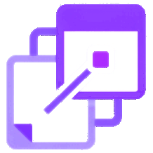

Cores, fontes e logo do app, lidas de src/index.css. Cada amostra mostra o
valor do tema claro (esquerda) e do escuro (direita). A página inteira segue o tema
escolhido acima.
As 3 cores mais usadas
Contando referências no código, ganham as cores de texto e de ação. Medindo pixels na tela
(Início e Semana), ganham as superfícies, já que a névoa aparece pouco no código mas cobre
metade da tela.
Cores da marca
A agenda pautada: névoa, papel, tinta, grafite, pauta e a caneta violeta.
Apelidos do shadcn/ui
Nomes usados pelos componentes de src/components/ui/.
Barra lateral
Fundos decorativos
Translúcidos (o xadrez mostra a transparência). Aurora, Pontos e Grade; o Liso não tem
camada.
Escalas
Contraste WCAG
Texto normal: AA ≥ 4,5:1, AAA ≥ 7:1. Gráfico e texto grande: ≥ 3:1.
Cores de categoria
Não são cores da marca: são as 12 opções que o usuário escolhe para as categorias. No tema
escuro, a tela clareia cada uma 28%; esta página mostra o valor do tema ativo.
Tipografia
Uma família só, Bricolage Grotesque Variable (OFL 1.1, arquivo local). A hierarquia vem de
peso, tamanho e largura.
Número do Dia · 96 px · 800 · largura 75% · tracking −0,04em · leading 0,78
02
Título de página · text-4xl (36/40 px) · 800 · largura 80% · tracking −0,02em
Início
Título de seção e card · text-lg (18/28 px) · 700–800 · largura 85% · tracking
−0,01em
12 itens concluídos no último ano
Item de tarefa · text-base (16/24 px) · 400
Pagar a conta de luz
Interface · text-sm (14/20 px) · 400 / 500 / 600 (o tamanho mais usado)
Calendário · Procedimentos ·
Hoje
Texto secundário · text-xs (12/16 px) em grafite, com selo de atraso
1 pendente ·
há 3 dias
· Atrasadas
Pesos 400 · 500 · 600 · 700 · 800 (eixo vai de 200 a 800)
RegularMediumSemiboldBoldExtrabold
Larguras 75% · 80% · 85% · 100% (peso 800)
SemanaSemanaSemanaSemana
Números tabulares (tabular-nums) · Monoespaçada do sistema (só no campo
hexadecimal)
1 111 · 2 222 · 0 808
#8b3dff
Logo
Imagem PNG com fundo transparente, um par por tema. "Memor" muda de cor com o tema (#1A1625
no claro, branco no escuro); "IA" e o símbolo são violeta nos dois.
Completa · tema clarologo-memoria-clara.png · 864×218
Completa · tema escurologo-memoria.png · 864×218

Símbolo · tema clarosimbolo-memoria-claro.png · 218×218 ·
64, 32 e favicon 16 px
Símbolo · tema escuro e íconesimbolo-memoria.png ·
apple-touch-icon.png 180×180
Área de respiroNo mínimo metade da altura da logo em volta (16 px na
logo de 32 px).
Use o par do tema: clara sobre fundo claro, a outra sobre fundo
escuro.
Completa com no mínimo 32 px de altura (o tamanho na barra lateral);
menor que isso, use o símbolo (até 16 px, como no favicon).
Não estique: mantenha a proporção 864×218 (≈ 4:1) e 1:1 no símbolo.
Não troque as cores, não aplique sombra nem contorno, não recrie com texto.
Não altere os originais em img/ e src/assets/; esta pasta
tem cópias.